Un bambino cammina 5.0 m verso nord, poi 4.0 m verso est e infine 2.0 m verso sud-est.
-
Quanto vale il modulo dello spostamento netto del bambino dall’inizio alla fine del percorso?
-
A. 4.4 m
-
B. 5.0 m
-
C. 6.5 m
-
D. 7.0 m
-
E. 11.0 m Topic: Newtonian Mechanics Metodi: Vector Decomposition Competenze: Mathematical Modeling Objects: — Fonte: Testo (PDF) — p.3 Risposta: C · Soluzioni (PDF)
A child walks five feet north, then four feet east, and finally two feet southeast.
How much is the net shift form for the child from the beginning to the end of the journey?
- A. 4.4 m
- B. 5.0 m
- C. 6.5 m
- D. 7.0 m
- E. 11.0 m Topic: Newtonian Mechanics Metodi: Vector Decomposition Competenze: Mathematical Modeling Objects: — Fonte: Testo (PDF) — p.3 The Commission has also adopted a proposal for a regulation on the protection of the environment in the Member States of the European Union.
Il diagramma mostra l’andamento della pressione in funzione del volume di un gas perfetto quando è compresso adiabaticamente dal punto X al punto Y e poi espanso isotermicamente fino al punto Z; entrambe le trasformazioni sono reversibili.
- Quale dei seguenti grafici rappresenta meglio l’andamento della temperatura del gas al variare dell’entropia ?
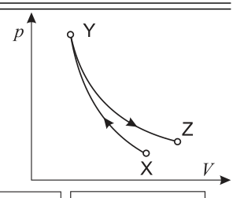
p-V diagram adiabatic + isothermal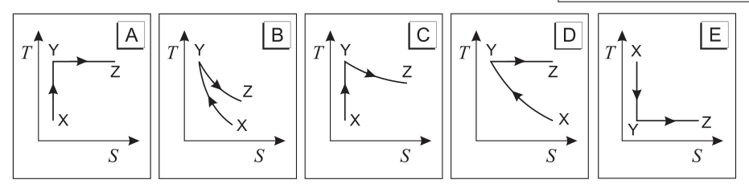
T-S answer choice graphs A-ETopic: Thermodynamics Metodi: Thermodynamic Cycle Analysis, First Law of Thermodynamics Competenze: Physical Reasoning, Diagrammatic Reasoning Objects: Gas Fonte: Testo (PDF) — p.3 Risposta: A · Soluzioni (PDF)
The diagram shows the pressure trend in relation to the volume of a perfect gas when it is adiabatically compressed from point X to point Y and then isothermally expanded to point Z; both transformations are reversible.
- Which of the following graphs best represents the trend of the temperature of the gas to the change in entropy ?
The following table shows the results of the test:
The following table shows the results of the analysis of the results of the evaluation:
Topic: Thermodynamics Metodi: Thermodynamic Cycle Analysis, First Law of Thermodynamics Competenze: Physical Reasoning, Diagrammatic Reasoning Objects: Gas Fonte: Testo (PDF) — p.3 The Commission has also proposed that the Commission should adopt a proposal for a regulation on the protection of the environment and the environment.
Due specchi piani, e , sono disposti l’uno di fronte all’altro, parallelamente, a una distanza di 3 m. Uno studente, posto a 2 m di distanza dallo specchio di sinistra, guarda questo specchio e vede una serie di immagini che mostrano il suo volto o la sua nuca.
-
Qual è la distanza tra lo studente e la seconda delle immagini, qui sopra citate, che mostra il suo volto?
-
A. 2 m
-
B. 4 m
-
C. 6 m
-
D. 8 m
-
E. 10 m
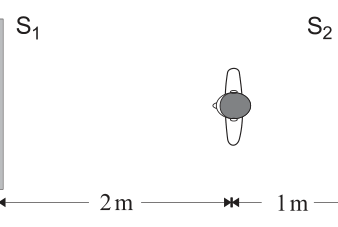
Two parallel plane mirrors with studentTopic: Geometric Optics Metodi: Ray Tracing Competenze: Physical Reasoning, Diagrammatic Reasoning Objects: Mirror Fonte: Testo (PDF) — p.3 Risposta: E · Soluzioni (PDF)
Two flat mirrors, and , are placed in front of each other, parallel to each other, at a distance of 3 m. A student, placed two meters away from the mirror on the left, looks at this mirror and sees a series of images showing his face or his neck.
What is the distance between the student and the second of the images, cited above, showing his face?
- A. 2 m
- B. 4 m
- C. 6 m
- D. 8 m
- E. 10 m
Two parallel plane mirrors with student
Topic: Geometric Optics Metodi: Ray Tracing Competenze: Physical Reasoning, Diagrammatic Reasoning Objects: Mirror Fonte: Testo (PDF) — p.3 The Commission has also adopted a proposal for a regulation on the protection of the environment and the environment in the Member States.
Uno studente che utilizza l’apparato di Millikan ha ottenuto i seguenti valori per la carica elettrica su diverse gocce di olio:
-
Usando unicamente questi risultati lo studente potrebbe dedurre che
-
A. il valore più grande per la carica dell’elettrone è C.
-
B. il valore più grande per la carica dell’elettrone è C.
-
C. il valore più grande per la carica dell’elettrone è C.
-
D. la minima carica dell’elettrone è C.
-
E. la goccia con la carica più piccola ha solo un elettrone. Topic: Modern-Quantum Physics, Electrostatics Metodi: Experimental Data Analysis, Physical Modeling Competenze: Physical Reasoning, Significant Figures Objects: Droplet Fonte: Testo (PDF) — p.3 Risposta: B · Soluzioni (PDF)
One student using Millikan’s device obtained the following electrical charge values on several drops of oil:
-
Using these results alone, the student could deduce that
-
A. the largest value for the electron charge is C.
-
B. the largest value for the electron charge is C.
-
C. the largest value for the electron charge is C.
-
D. the minimum electron charge is C.
-
The drop with the smallest charge has only one electron. Topic: Modern-Quantum Physics, Electrostatics Metodi: Experimental Data Analysis, Physical Modeling Competenze: Physical Reasoning, Significant Figures Objects: Droplet Fonte: Testo (PDF) — p.3 The Commission has also adopted a number of proposals for the implementation of the ‘European Union’s strategy for the protection of the environment.
La massa della Terra è circa 81 volte più grande di quella della Luna.
-
Se la gravità terrestre esercita una forza di modulo sulla Luna, il modulo della forza gravitazionale della Luna sulla Terra è…
-
A.
-
B.
-
C.
-
D.
-
E. Topic: Gravitation, Newtonian Mechanics Metodi: Newton’s Law of Gravitation, Free-Body Diagram Competenze: Physical Reasoning Objects: Planet Fonte: Testo (PDF) — p.3 Risposta: C · Soluzioni (PDF)
The mass of the Earth is about 81 times that of the Moon.
-
Se la gravità terrestre esercita una forza di modulo sulla Luna, il modulo della forza gravitazionale della Luna sulla Terra è…
-
A.
-
B.
-
C.
-
D.
-
E. Topic: Gravitation, Newtonian Mechanics Metodi: Newton’s Law of Gravitation, Free-Body Diagram Competenze: Physical Reasoning Objects: Planet Fonte: Testo (PDF) — p.3 Risposta: C · Soluzioni (PDF)
In figura è rappresentato un blocco di massa kg che si sta muovendo verso destra con un’accelerazione di 10 m s concorde con il moto; al blocco è applicata una forza di modulo N.
-
Quanto vale il coefficiente d’attrito dinamico tra il blocco e il piano?
-
A. 0
-
B. 0.13
-
C. 0.25
-
D. 0.51
-
E. 1.02
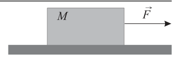
Block M on surface with force FTopic: Newtonian Mechanics Metodi: Free-Body Diagram, Kinematic Equations Competenze: Physical Reasoning, Mathematical Modeling Objects: Block Fonte: Testo (PDF) — p.4 Risposta: C · Soluzioni (PDF)
The figure shows a block of mass kg moving to the right with a motor-compatible acceleration of 10 m s; a force of module N is applied to the block.
What’s the dynamic friction coefficient between the block and the plane?
- A. 0
- B. 0.13
- C. 0.25
- D. 0.51
- E. 1.02
The following table shows the methodology used for the calculation of the total value of the input:
Topic: Newtonian Mechanics Metodi: Free-Body Diagram, Kinematic Equations Competenze: Physical Reasoning, Mathematical Modeling Objects: Block Fonte: Testo (PDF) — p.4 The Commission has also adopted a proposal for a regulation on the protection of the environment in the Member States of the European Union.
Nel circuito rappresentato in figura, dove V, , , ed , qual è l’intensità di corrente segnata dall’amperometro che si può supporre ideale?
- A. 0.33 A
- B. 1.0 A
- C. 2.0 A
- D. 4.0 A
- E. 6.0 A
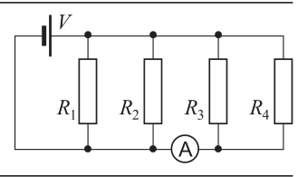
Resistor circuit with ammeterTopic: Circuits Metodi: Kirchhoff’s Laws, Equivalent Circuit Reduction Competenze: Mathematical Modeling, Physical Reasoning Objects: Resistor, Battery, Galvanometer Fonte: Testo (PDF) — p.4 Risposta: B · Soluzioni (PDF)
In the circuit shown in Figure, where V, , , and , what is the current intensity indicated by the amperometer that can be assumed to be ideal?
- A. 0.33 A
- B. 1.0 A
- C. 2.0 A
- D. 4.0 A
- E. 6.0 A
The following table shows the results of the tests:
Topic: Circuits Metodi: Kirchhoff’s Laws, Equivalent Circuit Reduction Competenze: Mathematical Modeling, Physical Reasoning Objects: Resistor, Battery, Galvanometer Fonte: Testo (PDF) — p.4 The Commission has also adopted a number of proposals for the implementation of the ‘European Union’s strategy for the protection of the environment.
Un piccolo LED rosso viene usato come sorgente di luce puntiforme e approssimativamente monocromatica. Un fotorivelatore, in grado di misurare sia la lunghezza d’onda che il flusso luminoso incidente per unità di superficie normale (illuminamento), viene posto perpendicolarmente alla radiazione a 1 m di distanza dalla sorgente e usato come ricevitore. L’esperimento viene fatto in un mezzo trasparente, omogeneo e isotropo.
-
Se il ricevitore viene spostato alla distanza di 2 m dalla sorgente, quali differenze si osservano?
-
A. La lunghezza d’onda non cambia, l’illuminamento non cambia.
-
B. La lunghezza d’onda non cambia, l’illuminamento si dimezza.
-
C. La lunghezza d’onda non cambia, l’illuminamento si riduce a un quarto.
-
D. La lunghezza d’onda si dimezza, l’illuminamento si dimezza.
-
E. La lunghezza d’onda si dimezza, l’illuminamento si riduce a un quarto. Topic: Geometric Optics, Oscillations & Waves Metodi: Physical Modeling Competenze: Physical Reasoning Objects: — Fonte: Testo (PDF) — p.4 Risposta: C · Soluzioni (PDF)
A small red LED is used as a pointed and approximately monochrome light source. A photorevelator, capable of measuring both wavelength and incident light flow per unit of normal surface area (lighting), is placed perpendicular to the radiation at a distance of 1 m from the source and used as a receiver. The experiment is carried out in a transparent, homogeneous and isotropic medium.
-
If the receiver is moved 2 m away from the source, what differences are observed?
-
A. The wavelength does not change, the illumination does not change.
-
B. The wavelength does not change, the illumination is halved.
-
C. The wavelength does not change, the illumination is reduced to a quarter.
-
MSK1/>D The wavelength is halved, the illumination is halved.
-
E. The wavelength is halved, the illumination is reduced to a quarter. Topic: Geometric Optics, Oscillations & Waves Metodi: Physical Modeling Competenze: Physical Reasoning Objects: — Fonte: Testo (PDF) — p.4 The Commission has also adopted a proposal for a regulation on the protection of the environment in the Member States of the European Union.
-
Perché in qualche supermercato si adopera uno specchio convesso per tenere sotto controllo la situazione?
-
A. Per ingrandire gli oggetti.
-
B. Per raddrizzare l’immagine degli oggetti.
-
C. Per fornire una immagine reale.
-
D. Perché fornisce un campo visivo ampio.
-
E. Per invertire la destra con la sinistra. Topic: Geometric Optics Metodi: Ray Tracing, Thin Lens & Mirror Equation Competenze: Physical Reasoning Objects: Mirror Fonte: Testo (PDF) — p.4 Risposta: D · Soluzioni (PDF)
Why is a convex mirror used in some supermarket to keep things under control?
- A. To enlarge the objects.
- B. To straighten the image of the objects.
- C. To provide a real image.
- D. Because it provides a wide field of view.
- E. To reverse the right with the left. Topic: Geometric Optics Metodi: Ray Tracing, Thin Lens & Mirror Equation Competenze: Physical Reasoning Objects: Mirror Fonte: Testo (PDF) — p.4 The Commission has also adopted a number of proposals for the implementation of the ‘European Union’s strategy for the protection of the environment.
Due sorgenti a distanza emettono, in fase, onde della stessa lunghezza d’onda .
-
Per quale valore della differenza di percorso si avrà sempre interferenza distruttiva nel punto ?
-
A.
-
B.
-
C.
-
D.
-
E.
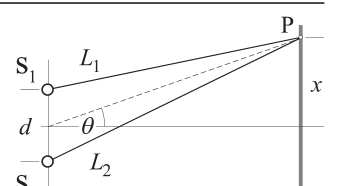
Two-source interference geometryTopic: Wave Optics, Oscillations & Waves Metodi: Superposition Principle, Interference & Diffraction Analysis Competenze: Physical Reasoning, Diagrammatic Reasoning Objects: — Fonte: Testo (PDF) — p.4 Risposta: D · Soluzioni (PDF)
Two sources at a distance emit waves of the same wavelength in phase.
-
What is the value of the path difference for which there will always be destructive interference at ?
-
A.
-
B.
-
C.
-
D.
-
E.
The following information is provided for in the Annex to Implementing Regulation (EU) 2015/2446.
Topic: Wave Optics, Oscillations & Waves Metodi: Superposition Principle, Interference & Diffraction Analysis Competenze: Physical Reasoning, Diagrammatic Reasoning Objects: — Fonte: Testo (PDF) — p.4 The Commission has also adopted a number of proposals for the implementation of the ‘European Union’s strategy for the protection of the environment.
-
Stimare la massa di una colonna di monete da 1 € alta quanto la torre di Pisa.
-
A. 20 kg
-
B. 200 kg
-
C. 2 000 kg
-
D. 20 000 kg
-
E. 200 000 kg Topic: Order-of-Magnitude Estimation Metodi: Order-of-Magnitude Estimation, Dimensional Analysis Competenze: Estimation & Approximation Objects: — Fonte: Testo (PDF) — p.4 Risposta: B · Soluzioni (PDF)
-
Estimate the mass of a column of 1 € coins as tall as the Tower of Pisa.
-
A. 20 kg
-
B. 200 kg
-
C. 2 000 kg
-
D. 20 000 kg
-
E. 200 000 kg Topic: Order-of-Magnitude Estimation Metodi: Order-of-Magnitude Estimation, Dimensional Analysis Competenze: Estimation & Approximation Objects: — Fonte: Testo (PDF) — p.4 Risposta: B · Soluzioni (PDF)
Si riempie di mercurio un tubo di vetro lungo 1 m e lo si rovescia, tenendolo tappato, in una bacinella di mercurio; liberando l’apertura, un po’ di mercurio scende e, all’equilibrio, il menisco del mercurio si trova 76 cm al di sopra del livello del mercurio nella bacinella.
-
In quale situazione il dislivello tra le superfici libere del mercurio dentro e fuori dal tubo non è più 76 cm?
-
A. Se si inclina il tubo di 15°.
-
B. Se si utilizza un tubo di diametro diverso.
-
C. Se si utilizza un tubo più lungo.
-
D. Se si introduce tutto l’apparato sotto una campana di vetro da cui si estrae un po’ d’aria con una pompa.
-
E. Se si versa dell’altro mercurio nella bacinella. Topic: Fluid Mechanics Metodi: Hydrostatic Equilibrium Competenze: Physical Reasoning Objects: Tube, Manometer Fonte: Testo (PDF) — p.5 Risposta: D · Soluzioni (PDF)
A glass tube 1 m long is filled with mercury and then tucked into a mercury basin, holding it covered; releasing the opening, some mercury descends and, at equilibrium, the mercury meniscus is 76 cm above the mercury level in the basin.
-
In which situation is the difference between the free surfaces of mercury inside and outside the tube no longer 76 cm?
-
A. If the tube of 15° is tilted.
-
B. If a tube of different diameter is used.
-
C. If a longer tube is used.
-
D. If the whole apparatus is inserted under a glass bell from which some air is extracted with a pump.
-
E. If you pour any other mercury into the basin. Topic: Fluid Mechanics Metodi: Hydrostatic Equilibrium Competenze: Physical Reasoning Objects: Tube, Manometer Fonte: Testo (PDF) — p.5 The Commission has also adopted a number of proposals for the implementation of the ‘European Union’s strategy for the protection of the environment.
La figura mostra un disco che ruota, senza attrito, attorno a un asse verticale mantenuto fisso. Un grosso pezzo di plastilina viene appoggiato sul disco e vi rimane attaccato.
- Considerando la situazione subito prima e subito dopo l’urto, quali delle seguenti affermazioni sono corrette?
1 – Il momento angolare del sistema rimane lo stesso. 2 – La velocità angolare del disco diminuisce. 3 – L’energia cinetica del sistema non cambia.
- A. Solo la 1 e la 2.
- B. Solo la 2 e la 3.
- C. Solo la 1.
- D. Solo la 3.
- E. Tutte e tre.
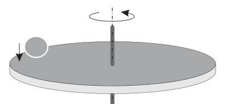
Rotating disk before clay impactTopic: Rotational Dynamics Metodi: Conservation of Momentum, Torque & Angular Momentum Analysis Competenze: Physical Reasoning, Diagrammatic Reasoning Objects: Disk Fonte: Testo (PDF) — p.5 Risposta: A · Soluzioni (PDF)
The figure shows a disc rotating, without friction, around a fixed vertical axis. A large piece of plastic is placed on the disc and is attached to it.
- In view of the situation immediately before and immediately after the impact, which of the following statements is correct?
1 The angular moment of the system remains the same. 2 The angular velocity of the disc decreases. 3 The kinetic energy of the system does not change.
- A. Only the 1 and 2.
- **B ** Only the 2 and 3.
- C. Only the 1.
- D Only the 3.
- All three.
The following table shows the results of the calculations:
Topic: Rotational Dynamics Metodi: Conservation of Momentum, Torque & Angular Momentum Analysis Competenze: Physical Reasoning, Diagrammatic Reasoning Objects: Disk Fonte: Testo (PDF) — p.5 The Commission has also proposed that the Commission should adopt a proposal for a regulation on the protection of the environment and the environment.
Una molla appesa verticalmente sostiene una scatola avente massa di 2 kg; se a questa si sostituisce una scatola con massa di 7 kg la molla si allunga ulteriormente di 7.5 cm. La figura mostra il sistema molla-scatola in equilibrio, prima e dopo l’operazione.
-
La costante elastica della molla vale
-
A. 0.67 N/m
-
B. 6.54 N/m
-
C. 66.7 N/m
-
D. 654 N/m
-
E. 1177 N/m
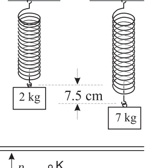
Spring-box system before and afterTopic: Oscillations & Waves, Newtonian Mechanics Metodi: Hooke’s Law, Free-Body Diagram Competenze: Mathematical Modeling, Physical Reasoning Objects: Spring, Block Fonte: Testo (PDF) — p.5 Risposta: D · Soluzioni (PDF)
A vertical spring shall support a box of 2 kg; if a box of 7 kg is replaced, the spring shall be extended by 7.5 cm. The figure shows the spring-box system in balance before and after the operation.
-
The elastic constant of the spring is valid
-
A. 0.67 N/m
-
B. 6.54 N/m
-
C. 66.7 N/m
-
D. 654 N/m
-
E. 1177 N/m
Spring-box system before and after
Topic: Oscillations & Waves, Newtonian Mechanics Metodi: Hooke’s Law, Free-Body Diagram Competenze: Mathematical Modeling, Physical Reasoning Objects: Spring, Block Fonte: Testo (PDF) — p.5 The Commission has also adopted a number of proposals for the implementation of the ‘European Union’s strategy for the protection of the environment.
Un gas perfetto segue il ciclo termodinamico reversibile mostrato in figura. La trasformazione KL è isoterma e la trasformazione MK è adiabatica.
- Quali delle seguenti affermazioni sono corrette?
1 – Durante la trasformazione LM il gas compie lavoro. 2 – La temperatura in K è maggiore della temperatura in L. 3 – La temperatura in K è maggiore della temperatura in M.
- A. La 1 e la 2.
- B. La 2 e la 3.
- C. Solo la 1.
- D. Solo la 3.
- E. Sono tutte corrette.
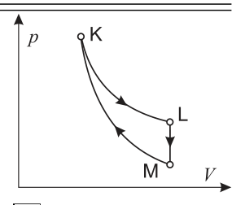
Thermodynamic cycle K-L-M diagramTopic: Thermodynamics Metodi: Thermodynamic Cycle Analysis, First Law of Thermodynamics Competenze: Physical Reasoning, Diagrammatic Reasoning Objects: Gas Fonte: Testo (PDF) — p.5 Risposta: D · Soluzioni (PDF)
A perfect gas follows the reversible thermodynamic cycle shown in the figure. The KL transform is isothermal and the MK transform is adiabatic.
Which of the following is correct?
1 During the LM transformation the gas performs work. 2 The temperature in K is higher than the temperature in L. 3 The temperature in K is higher than the temperature in M.
- A. La 1 e la 2.
- B. La 2 e la 3.
- C. Only the 1.
- D Only the 3.
- MSK0/>E.** They are all correct.
The following table shows the methodology used for calculating the energy efficiency of the product:
Topic: Thermodynamics Metodi: Thermodynamic Cycle Analysis, First Law of Thermodynamics Competenze: Physical Reasoning, Diagrammatic Reasoning Objects: Gas Fonte: Testo (PDF) — p.5 The Commission has also adopted a number of proposals for the implementation of the ‘European Union’s strategy for the protection of the environment.
La figura mostra due sfere conduttrici identiche tra loro, S e T, inizialmente cariche, con carica C e C.
-
Se le sfere vengono messe in contatto per un breve intervallo di tempo mediante un filo di elevata resistenza, quale delle due sfere avrà un guadagno netto di elettroni?
-
A. Solamente S.
-
B. Solamente T.
-
C. Sia S che T.
-
D. Nessuna delle due.
-
E. Dipende dalla durata del contatto.
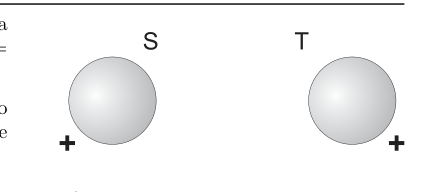
Two conducting spheres S and TTopic: Electrostatics Metodi: Coulomb’s Law, Physical Modeling Competenze: Physical Reasoning Objects: Conducting Sphere, Wire Fonte: Testo (PDF) — p.6 Risposta: A · Soluzioni (PDF)
The figure shows two identical conducting spheres, S and T, initially charged, with a charge of C and C.
-
If the spheres are brought into contact for a short time by a high-strength wire, which of the two spheres will have a net gain of electrons?
-
A Only S.
-
B. Only T.
-
C. Both S and T.
-
** D ** Neither of the two.
-
E. Depends on the duration of contact.
Two conducting spheres S and T
Topic: Electrostatics Metodi: Coulomb’s Law, Physical Modeling Competenze: Physical Reasoning Objects: Conducting Sphere, Wire Fonte: Testo (PDF) — p.6 The Commission has also proposed that the Commission should adopt a proposal for a regulation on the protection of the environment and the environment.
La spira rettangolare in figura ruota a velocità costante intorno al suo asse. Nella regione dove è presente la spira il campo magnetico può considerarsi uniforme.
- Quale dei seguenti grafici rappresenta meglio come varia col tempo la f.e.m. indotta ai capi della spira, durante un periodo della rotazione?
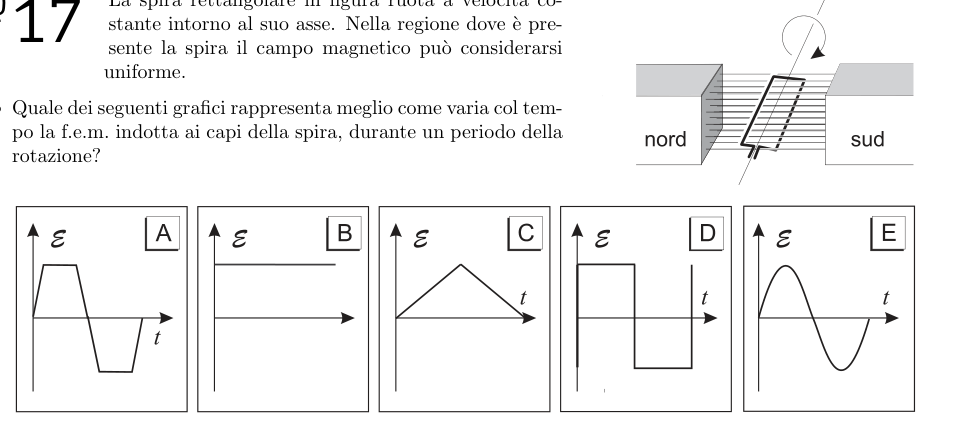
Rotating coil in B field + EMF graphs A-ETopic: Electromagnetic Induction Metodi: Faraday’s Law of Induction, Simple Harmonic Motion Analysis Competenze: Physical Reasoning, Diagrammatic Reasoning Objects: Coil Fonte: Testo (PDF) — p.6 Risposta: E · Soluzioni (PDF)
The rectangular spire in the shape of a wheel rotates at a constant speed around its axis. In the region where the spire is present, the magnetic field may be considered uniform.
- Which of the following graphs best represents how f.e.m. varies over time induced to the heads of the spiral during a period of rotation?
The following table shows the results of the calculation of the total number of samples taken:
Topic: Electromagnetic Induction Metodi: Faraday’s Law of Induction, Simple Harmonic Motion Analysis Competenze: Physical Reasoning, Diagrammatic Reasoning Objects: Coil Fonte: Testo (PDF) — p.6 The Commission has also adopted a proposal for a regulation on the protection of the environment and the environment in the Member States.
Un gas perfetto subisce un’espansione isobara.
- Quale riga della tabella descrive correttamente la trasformazione?
| Il gas fa lavoro | Cambia l’energia interna del gas | Cambia la temperatura del gas | Cambia l’entropia del gas | |
|---|---|---|---|---|
| A | NO | SÌ | SÌ | SÌ |
| B | SÌ | NO | NO | SÌ |
| C | SÌ | SÌ | SÌ | SÌ |
| D | NO | NO | NO | NO |
| E | SÌ | SÌ | SÌ | NO |
Topic: Thermodynamics Metodi: First Law of Thermodynamics, Ideal Gas Law Competenze: Physical Reasoning Objects: Gas Fonte: Testo (PDF) — p.6 Risposta: C · Soluzioni (PDF)
A perfect gas undergoes isobaric expansion.
Which line in the table correctly describes the transformation?
Gase works. Gase changes the energy inside the gas. Gase changes the temperature of the gas. Gase changes the entropy. |---|---|---|---|---| | A | NO | SÌ | SÌ | SÌ | | B | SÌ | NO | NO | SÌ | | C | SÌ | SÌ | SÌ | SÌ | | D | NO | NO | NO | NO | | E | SÌ | SÌ | SÌ | NO |
Topic: Thermodynamics Metodi: First Law of Thermodynamics, Ideal Gas Law Competenze: Physical Reasoning Objects: Gas Fonte: Testo (PDF) — p.6 The Commission has also adopted a proposal for a regulation on the protection of the environment in the Member States of the European Union.
Un oggetto è lanciato con un angolo rispetto al piano orizzontale; in figura sono mostrate le componenti orizzontale e verticale della velocità nell’istante del lancio.
-
Trascurando la resistenza dell’aria, quale di queste coppie di valori dà, approssimativamente, le componenti orizzontale e verticale della velocità dopo 0.5 s dal lancio, espresse in m s?
-
A. (3; 3)
-
B. (3; 4)
-
C. (8; 3)
-
D. (8; 4)
-
E. (8; 9)
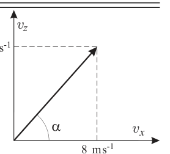
Velocity components at launchTopic: Newtonian Mechanics Metodi: Kinematic Equations, Vector Decomposition Competenze: Mathematical Modeling, Physical Reasoning Objects: Projectile Fonte: Testo (PDF) — p.6 Risposta: D · Soluzioni (PDF)
An object is launched at an angle to the horizontal plane; the horizontal and vertical components of the speed at the time of launch are shown in the figure.
-
Given the air resistance, which of these pairs of values gives, approximately, the horizontal and vertical components of the speed after 0.5 s from launch, expressed in m s?
-
A. (3; 3)
-
B. (3; 4)
-
C. (8; 3)
-
D. (8; 4)
-
E. (8; 9)
The speed of the vehicle is determined by the speed of the vehicle.
Topic: Newtonian Mechanics Metodi: Kinematic Equations, Vector Decomposition Competenze: Mathematical Modeling, Physical Reasoning Objects: Projectile Fonte: Testo (PDF) — p.6 The Commission has also adopted a number of proposals for the implementation of the ‘European Union’s strategy for the protection of the environment.
Un pendolo semplice viene spostato di un piccolo angolo rispetto alla verticale e poi viene lasciato libero al tempo .
- Quale dei seguenti grafici descrive meglio l’andamento dell’energia cinetica in funzione del tempo durante un’intera oscillazione?
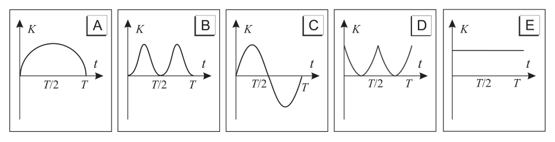
Kinetic energy K vs time answer graphs A-ETopic: Oscillations & Waves Metodi: Simple Harmonic Motion Analysis, Conservation of Energy Competenze: Physical Reasoning, Diagrammatic Reasoning Objects: Pendulum Fonte: Testo (PDF) — p.7 Risposta: B · Soluzioni (PDF)
A simple pendulum is moved at a small angle to the vertical and then left free at time.
- Which of the following graphs best describes the kinetic energy trend over time during a whole oscillation?
The following table shows the results of the calculations:
Topic: Oscillations & Waves Metodi: Simple Harmonic Motion Analysis, Conservation of Energy Competenze: Physical Reasoning, Diagrammatic Reasoning Objects: Pendulum Fonte: Testo (PDF) — p.7 The Commission has also adopted a number of proposals for the implementation of the ‘European Union’s strategy for the protection of the environment.
Una persona sta salendo di corsa le scale. Il grafico seguente mostra il lavoro compiuto in funzione del tempo trascorso, misurati entrambi dalla partenza.
-
Quale grandezza è rappresentata dalla pendenza della retta?
-
A. Impulso
-
B. Quantità di moto
-
C. Velocità
-
D. Potenza
-
E. Accelerazione
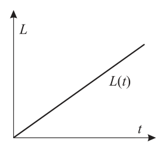
Work vs time graph for stair climbingTopic: Newtonian Mechanics, Conservation of Energy Metodi: Physical Modeling, Graph Linearization Competenze: Physical Reasoning, Diagrammatic Reasoning Objects: — Fonte: Testo (PDF) — p.7 Risposta: D · Soluzioni (PDF)
Someone is running up the stairs. The following graph shows the work done in terms of time spent, both measured from the start.
-
What size is represented by the slope of the straight?
-
A. Pulse
-
B. Motorcycle quantity
-
C. Speed
-
D. Power
-
E. Acceleration
The following table shows the results of the study:
Topic: Newtonian Mechanics, Conservation of Energy Metodi: Physical Modeling, Graph Linearization Competenze: Physical Reasoning, Diagrammatic Reasoning Objects: — Fonte: Testo (PDF) — p.7 The Commission has also adopted a number of proposals for the implementation of the ‘European Union’s strategy for the protection of the environment.
Un oggetto si raffredda mentre l’ambiente circostante si trova alla temperatura .
-
Quali dei seguenti grafici descrivono correttamente questa situazione?
-
A. Solo il numero 1.
-
B. Solo il numero 3.
-
C. Il numero 1 e il 2.
-
D. Il numero 2 e il 3.
-
E. Sono tutti corretti.
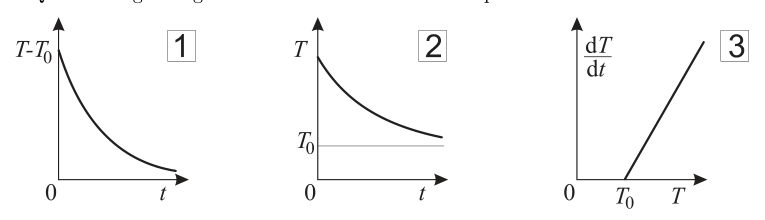
Cooling object temperature graphs 1-3Topic: Thermodynamics Metodi: Physical Modeling, Differential Equations Competenze: Physical Reasoning, Diagrammatic Reasoning Objects: — Fonte: Testo (PDF) — p.7 Risposta: C · Soluzioni (PDF)
An object cools while the surrounding environment is at .
Which of the following graphs correctly describes this situation?
- A. Only the number 1.
- B. Only the number 3.
- C. The numbers 1 and 2.
- D. The numbers 2 and 3.
- MSK0/>E.** They are all correct.
The following table shows the results of the calculation of the CO2 emissions from the CO2 emissions from the CO2 emissions from the CO2 emissions from the CO2 emissions from the CO2 emissions from the CO2 emissions from the CO2 emissions from the CO2 emissions from the CO2 emissions from the CO2 emissions from the CO2 emissions from the CO2 emissions from the CO2 emissions from the CO2 emissions from the CO2 emissions from the CO2 emissions from the CO2 emissions from the CO2 emissions from the CO2 emissions from the CO2 emissions from the CO2 emissions from the CO2 emissions from the CO2 emissions from the CO2 emissions from the CO2 emissions from the CO2 emissions from the CO2 emissions from the CO2 emissions from the CO2 emissions from the CO2 emissions from the CO2 emissions from the CO2 emissions from the CO2 emissions from the CO2 emissions from the CO2 emissions from the CO2 emissions from the CO2 emissions from the CO2 emissions from the CO2 emissions from the CO2 emissions from the CO2 emissions from the CO2 emissions from the CO2 emissions from the CO2 emissions from the CO2 emissions from the CO2 emissions from the CO2 emissions from the CO2 emissions from the CO2 emissions from the CO2 emissions from the CO2 emissions from the CO2 emissions from the CO2 emissions from the CO2 emissions from the CO2 emissions from the CO2 emissions from the CO2 emissions from the CO2 emissions from the CO2 emissions from the CO2 emissions from the CO2 emissions from the CO2 emissions from the CO2 emissions from the CO2 emissions from the CO2 emissions from the CO2 emissions from the CO2 emissions from the CO2 emissions from the CO2 emissions from the CO2 emissions from the CO2 emissions from the Union.
Topic: Thermodynamics Metodi: Physical Modeling, Differential Equations Competenze: Physical Reasoning, Diagrammatic Reasoning Objects: — Fonte: Testo (PDF) — p.7 The Commission has also adopted a proposal for a regulation on the protection of the environment in the Member States of the European Union.
Il polonio 214 (Po) può decadere in polonio 210 (Po) attraverso un decadimento seguito da
- A. un decadimento e un decadimento
- B. due decadimenti
- C. un decadimento e un decadimento
- D. due decadimenti
- E. un decadimento Topic: Nuclear & Particle Physics Metodi: Radioactive Decay Law, Physical Modeling Competenze: Physical Reasoning Objects: Nucleus Fonte: Testo (PDF) — p.7 Risposta: B · Soluzioni (PDF)
Polonium 214 (Po) can decay into polonium 210 (Po) through decay followed by
- **A ** a decay and a decay
- **B ** two decays
- **C ** a decay and a decay
- **D ** two decays
- E. a decay Topic: Nuclear & Particle Physics Metodi: Radioactive Decay Law, Physical Modeling Competenze: Physical Reasoning Objects: Nucleus Fonte: Testo (PDF) — p.7 The Commission has also adopted a number of proposals for the implementation of the ‘European Union’s strategy for the protection of the environment.
Un filo di rame di lunghezza e sezione ha una resistenza . Un secondo filo di rame ha una lunghezza e una sezione ed è alla stessa temperatura del primo.
-
Qual è la resistenza del secondo filo?
-
A.
-
B.
-
C.
-
D.
-
E. Topic: Circuits Metodi: Physical Modeling, Dimensional Analysis Competenze: Mathematical Modeling, Physical Reasoning Objects: Wire Fonte: Testo (PDF) — p.7 Risposta: E · Soluzioni (PDF)
A copper wire of length and section has a resistance . A second copper wire has a length and a section and is at the same temperature as the first.
-
What’s the resistance of the second wire?
-
A.
-
B.
-
C.
-
D.
-
E. Topic: Circuits Metodi: Physical Modeling, Dimensional Analysis Competenze: Mathematical Modeling, Physical Reasoning Objects: Wire Fonte: Testo (PDF) — p.7 The Commission has also adopted a proposal for a regulation on the protection of the environment and the environment in the Member States.
-
L’unità di misura della capacità di un condensatore può essere scritta come
-
A. V C
-
B. C V
-
C. J s
-
D. C J
-
E. J C Topic: Electrostatics, Circuits Metodi: Dimensional Analysis Competenze: Unit Conversion, Physical Reasoning Objects: Capacitor Fonte: Testo (PDF) — p.8 Risposta: B · Soluzioni (PDF)
-
The unit of measurement of a capacitor’s capacity can be written as
-
A. V C
-
B. C V
-
C. J s
-
D. C J
-
E. J C Topic: Electrostatics, Circuits Metodi: Dimensional Analysis Competenze: Unit Conversion, Physical Reasoning Objects: Capacitor Fonte: Testo (PDF) — p.8 The Commission has also adopted a number of proposals for the implementation of the ‘European Union’s strategy for the protection of the environment.
-
Quanto vale la potenza minima sviluppata da un argano a motore per sollevare in 8 s un corpo di 400 kg a velocità costante per 10 m?
-
A. 320 W
-
B. 500 W
-
C. 3 100 W
-
D. 4 900 W
-
E. 32 000 W Topic: Newtonian Mechanics, Conservation of Energy Metodi: Energy Conservation Method, Kinematic Equations Competenze: Mathematical Modeling Objects: Block Fonte: Testo (PDF) — p.8 Risposta: D · Soluzioni (PDF)
-
What is the minimum power output of a motorized engine to lift a 400 kg body in 8 seconds at a constant speed of 10 m?
-
A. 320 W
-
B. 500 W
-
C. 3 100 W
-
D. 4 900 W
-
E. 32 000 W Topic: Newtonian Mechanics, Conservation of Energy Metodi: Energy Conservation Method, Kinematic Equations Competenze: Mathematical Modeling Objects: Block Fonte: Testo (PDF) — p.8 The Commission has also adopted a number of proposals for the implementation of the ‘European Union’s strategy for the protection of the environment.
Un grafico mostra come una grandezza dipende dalla grandezza . L’area sottesa al grafico ha le dimensioni di un lavoro quando
1 – è la velocità di un corpo e il modulo della forza che agisce su di esso. 2 – è la corrente che scorre in un resistore e la d.d.p. applicata a esso. 3 – è il volume occupato da un gas perfetto e la sua pressione.
-
Quali delle tre affermazioni sono vere?
-
A. Solo la 1
-
B. Solo la 3
-
C. Sia la 1 che la 2
-
D. Sia la 2 che la 3
-
E. Tutte e tre Topic: Newtonian Mechanics, Thermodynamics Metodi: Dimensional Analysis, Physical Modeling Competenze: Physical Reasoning, Mathematical Modeling Objects: Resistor, Gas Fonte: Testo (PDF) — p.8 Risposta: B · Soluzioni (PDF)
A graph shows how a size depends on the size . The area under the graph is the size of a work when
1 is the speed of a body and the force modulation acting on it. 2 is the current flowing in a resistor and the d.d.p. The Commission has not yet adopted a proposal. 3 is the volume of a perfect gas and its pressure.
Which of the three statements is true?
- A. Only the 1
- ** B ** Only the 3
- C. Both 1 and 2
- D. Both 2 and 3
- E. All three Topic: Newtonian Mechanics, Thermodynamics Metodi: Dimensional Analysis, Physical Modeling Competenze: Physical Reasoning, Mathematical Modeling Objects: Resistor, Gas Fonte: Testo (PDF) — p.8 The Commission has also adopted a number of proposals for the implementation of the ‘European Union’s strategy for the protection of the environment.
Quando un razzo che trasporta una navicella spaziale viene lanciato dalla superficie della Terra verso lo spazio con un’accelerazione verso l’alto diversa da zero, un uomo dentro la navicella che si sta pesando su una bilancia vede che il valore segnato dalla bilancia va a zero.
-
Questa affermazione è…
-
A. corretta, perché il peso di un oggetto decresce rapidamente se aumenta la distanza dal centro della Terra.
-
B. corretta, poiché l’attrazione gravitazionale si annulla con la reazione del pavimento della navicella sull’uomo.
-
C. corretta, poiché sia l’uomo, sia la navicella sono all’interno dello stesso campo gravitazionale.
-
D. sbagliata, poiché la navicella sta accelerando verso l’alto.
-
E. sbagliata, poiché l’uomo si muove con la stessa velocità della navicella. Topic: Gravitation, Newtonian Mechanics Metodi: Free-Body Diagram, Physical Modeling Competenze: Physical Reasoning Objects: Satellite, Planet Fonte: Testo (PDF) — p.8 Risposta: D · Soluzioni (PDF)
When a rocket carrying a spacecraft is launched from the surface of the Earth into space with a non-zero upward acceleration, a man inside the spacecraft weighing on a scale sees the value marked by the scale go to zero.
-
This statement is…
-
A correct, because the weight of an object decreases rapidly as the distance from the center of the Earth increases.
-
B correct, as gravitational pull is cancelled by the reaction of the ship’s floor to man.
-
C. correct, since both man and ship are within the same gravitational field.
-
D wrong, because the ship is accelerating upwards.
-
E wrong, since man moves at the same speed as the ship. Topic: Gravitation, Newtonian Mechanics Metodi: Free-Body Diagram, Physical Modeling Competenze: Physical Reasoning Objects: Satellite, Planet Fonte: Testo (PDF) — p.8 The Commission has also adopted a number of proposals for the implementation of the ‘European Union’s strategy for the protection of the environment.
Un condensatore viene inizialmente caricato a una differenza di potenziale di 120 V e successivamente scaricato su un resistore. Dopo s la sua d.d.p. si è ridotta a 60 V.
-
Dopo ulteriori s la sua d.d.p. sarà
-
A. 30 V
-
B. 20 V
-
C. 15 V
-
D. 0 V
-
E. −60 V Topic: Circuits Metodi: Differential Equations, Physical Modeling Competenze: Mathematical Modeling, Physical Reasoning Objects: Capacitor, Resistor Fonte: Testo (PDF) — p.8 Risposta: C · Soluzioni (PDF)
A capacitor is initially charged at a potential difference of 120 V and subsequently discharged onto a resistor. After s his D.D.P. It’s down to 60 V.
-
After further s his D.D.P. It will be
-
A. 30 V
-
B. 20 V
-
C. 15 V
-
D. 0 V
-
E. −60 V Topic: Circuits Metodi: Differential Equations, Physical Modeling Competenze: Mathematical Modeling, Physical Reasoning Objects: Capacitor, Resistor Fonte: Testo (PDF) — p.8 The Commission has also adopted a proposal for a regulation on the protection of the environment in the Member States of the European Union.
Un’onda trasversale che si propaga lungo una corda è descritta dall’equazione
con cm, rad m e rad s. L’asse è diretto verso destra.
-
Qual è la velocità dell’onda?
-
A. 0.80 m s verso sinistra
-
B. 1.25 m s verso sinistra
-
C. m s verso sinistra
-
D. 1.25 m s verso destra
-
E. 0.80 m s verso destra Topic: Oscillations & Waves Metodi: Wave Equation Competenze: Mathematical Modeling, Physical Reasoning Objects: String Fonte: Testo (PDF) — p.8 Risposta: A · Soluzioni (PDF)
A transverse wave propagating along a rope is described by the equation
with cm, rad m and rad s. The axis is directed to the right.
-
What’s the speed of the wave?
-
A. 0.80 m s to the left
-
B. 1.25 m s to the left
-
C. m s to the left
-
D. 1.25 m s to the right
-
E. 0.80 m s to the right Topic: Oscillations & Waves Metodi: Wave Equation Competenze: Mathematical Modeling, Physical Reasoning Objects: String Fonte: Testo (PDF) — p.8 The Commission has also proposed that the Commission should adopt a proposal for a regulation on the protection of the environment and the environment.
La corrente di un fiume largo 30 m si muove verso nord a 1.5 m s. Una barca a motore si muove con una velocità di 3 m s rispetto all’acqua del fiume.
-
Che angolo di rotta deve tenere la barca rispetto alla direzione della corrente per attraversare il fiume in direzione perpendicolare alle sponde?
-
A. 0°
-
B. 60°
-
C. 90°
-
D. 120°
-
E. 150° Topic: Newtonian Mechanics Metodi: Vector Decomposition, Kinematic Equations Competenze: Mathematical Modeling, Physical Reasoning Objects: — Fonte: Testo (PDF) — p.9 Risposta: D · Soluzioni (PDF)
The current of a 30 m wide river moves northwards at 1.5 m s. A motor boat moves at a speed of 3 m s with respect to river water.
-
What angle of course must the boat hold relative to the direction of the current to cross the river in the direction perpendicular to the shores?
-
A. 0°
-
B. 60°
-
C. 90°
-
D. 120°
-
E. 150° Topic: Newtonian Mechanics Metodi: Vector Decomposition, Kinematic Equations Competenze: Mathematical Modeling, Physical Reasoning Objects: — Fonte: Testo (PDF) — p.9 The Commission has also adopted a number of proposals for the implementation of the ‘European Union’s strategy for the protection of the environment.
Nelle stesse condizioni del quesito precedente, quanto tempo impiega la barca per attraversare il fiume da una sponda all’altra?
- A. 5 s
- B. 8.6 s
- C. 11.5 s
- D. 15 s
- E. 60 s Topic: Newtonian Mechanics Metodi: Vector Decomposition, Kinematic Equations Competenze: Mathematical Modeling Objects: — Fonte: Testo (PDF) — p.9 Risposta: C · Soluzioni (PDF)
Under the same conditions as the previous question, how long does it take the boat to cross the river from one bank to the other?
- A. 5 s
- B. 8.6 s
- C. 11.5 s
- D. 15 s
- E. 60 s Topic: Newtonian Mechanics Metodi: Vector Decomposition, Kinematic Equations Competenze: Mathematical Modeling Objects: — Fonte: Testo (PDF) — p.9 The Commission has also adopted a proposal for a regulation on the protection of the environment in the Member States of the European Union.
Uno studente pone un oggetto a diverse distanze da una lente convergente e misura le distanze a cui si formano le immagini. I valori di e misurati sono riportati in tabella, ma lo studente ha dimenticato di trascrivere l’ultima misura effettuata.
| 14.9 cm | 20.0 cm | 25.9 cm | |
|---|---|---|---|
| 29.7 cm | 20.4 cm | ? |
-
Qual è il valore che, ragionevolmente, ha dimenticato di scrivere?
-
A. 10.1 cm
-
B. 16.5 cm
-
C. 19.9 cm
-
D. 25.3 cm
-
E. 30.4 cm Topic: Geometric Optics Metodi: Thin Lens & Mirror Equation, Experimental Data Analysis Competenze: Physical Reasoning, Mathematical Modeling Objects: Lens Fonte: Testo (PDF) — p.9 Risposta: B · Soluzioni (PDF)
A student places an object at different distances from a converging lens and measures the distances at which images form. The values of and measured are given in the table, but the student forgot to transcribe the last measurement.
| 14.9 cm | 20.0 cm | 25.9 cm | |
|---|---|---|---|
| 29.7 cm | 20.4 cm | ? |
What’s the value of what you reasonably forgot to write?
- A. 10.1 cm
- B. 16.5 cm
- C. 19.9 cm
- D. 25.3 cm
- E. 30.4 cm Topic: Geometric Optics Metodi: Thin Lens & Mirror Equation, Experimental Data Analysis Competenze: Physical Reasoning, Mathematical Modeling Objects: Lens Fonte: Testo (PDF) — p.9 The Commission has also adopted a number of proposals for the implementation of the ‘European Union’s strategy for the protection of the environment.
La figura rappresenta un circuito composto da un resistore di resistenza variabile, un generatore ideale, un amperometro e un voltmetro ideali.
- Qual è l’effetto registrato dagli strumenti se si aumenta la resistenza da 1 000 Ω a 10 000 Ω? (Si assuma che la temperatura del sistema non vari).
| Voltmetro | Amperometro | |
|---|---|---|
| A | Invariato | Invariato |
| B | Invariato | Diminuisce |
| C | Invariato | Aumenta |
| D | Diminuisce | Invariato |
| E | Diminuisce | Diminuisce |
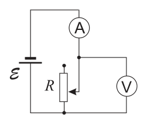
Circuit with variable resistor and metersTopic: Circuits Metodi: Kirchhoff’s Laws, Equivalent Circuit Reduction Competenze: Physical Reasoning, Diagrammatic Reasoning Objects: Resistor, Battery, Galvanometer Fonte: Testo (PDF) — p.9 Risposta: B · Soluzioni (PDF)
The figure represents a circuit composed of a resistor of variable resistance, an ideal generator, an ideal amperometer and a voltaometer.
- What effect do the instruments have if the resistance is increased from 1000 Ω to 10 000 Ω? (Assuming the system temperature does not vary).
♪ I’m not going to be able to see ♪ |---|---|---| ♪ A defective ♪ ♪ B, defective ♪ ♪ Decreases ♪ ♪ C is defective ♪ ♪ It’s rising ♪ ♪ D ♪ Decreases and changes ♪ ♪ And it’s going down ♪ ♪ It’s going down ♪
Circuit with variable resistor and meters
Topic: Circuits Metodi: Kirchhoff’s Laws, Equivalent Circuit Reduction Competenze: Physical Reasoning, Diagrammatic Reasoning Objects: Resistor, Battery, Galvanometer Fonte: Testo (PDF) — p.9 The Commission has also adopted a number of proposals for the implementation of the ‘European Union’s strategy for the protection of the environment.
Un elettrone si sta muovendo a m s in direzione perpendicolare a quella di un campo magnetico uniforme di intensità 2.0 T.
-
Qual è il modulo della forza magnetica agente sull’elettrone?
-
A. 0
-
B. N
-
C. N
-
D. N
-
E. N Topic: Magnetism, Electromagnetism Metodi: Lorentz Force Analysis Competenze: Mathematical Modeling, Physical Reasoning Objects: Electron Fonte: Testo (PDF) — p.9 Risposta: C · Soluzioni (PDF)
An electron is moving at m s perpendicular to that of a uniform magnetic field of 2.0 T intensity.
What’s the magnetic force pattern on the electron?
- A. 0
- B. N
- C. N
- D. N
- E. N Topic: Magnetism, Electromagnetism Metodi: Lorentz Force Analysis Competenze: Mathematical Modeling, Physical Reasoning Objects: Electron Fonte: Testo (PDF) — p.9 The Commission has also adopted a proposal for a regulation on the protection of the environment in the Member States of the European Union.
Un osservatore ha registrato i dati di velocità in tre diversi istanti, relativi al moto di un’auto soggetta a un’accelerazione costante, riportati nella tabella a destra.
| / s | / m s |
|---|---|
| 3.0 | 4.0 |
| 5.0 | 7.0 |
| 6.0 | 8.5 |
-
Quanto vale il modulo dell’accelerazione dell’auto?
-
A. 1.3 m s
-
B. 1.4 m s
-
C. 1.5 m s
-
D. 2.0 m s
-
E. 2.8 m s Topic: Newtonian Mechanics Metodi: Kinematic Equations, Experimental Data Analysis, Graph Linearization Competenze: Physical Reasoning, Mathematical Modeling Objects: — Fonte: Testo (PDF) — p.9 Risposta: C · Soluzioni (PDF)
One observer recorded the speed data in three different moments, relating to the motion of a car under constant acceleration, as shown in the table on the right.
| / s | / m s |
|---|---|
| 3.0 | 4.0 |
| 5.0 | 7.0 |
| 6.0 | 8.5 |
-
How much is the accelerator?
-
A. 1.3 m s
-
B. 1.4 m s
-
C. 1.5 m s
-
D. 2.0 m s
-
E. 2.8 m s Topic: Newtonian Mechanics Metodi: Kinematic Equations, Experimental Data Analysis, Graph Linearization Competenze: Physical Reasoning, Mathematical Modeling Objects: — Fonte: Testo (PDF) — p.9 The Commission has also adopted a proposal for a regulation on the protection of the environment in the Member States of the European Union.
Un blocco di 3.0 kg è a riposo su una superficie orizzontale. Un pezzo di argilla di 1.0 kg viene lanciato orizzontalmente alla velocità di 6.0 m s come mostrato in figura. Nell’urto, l’argilla e il blocco rimangono attaccati e si muovono insieme verso destra.
-
Trascurando gli attriti, la loro velocità subito dopo l’urto sarà di
-
A. 1.5 m s
-
B. 2.0 m s
-
C. 3.0 m s
-
D. 6.0 m s
-
E. 8.0 m s
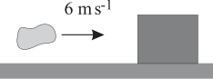
Clay block collision diagramTopic: Newtonian Mechanics, Conservation of Momentum Metodi: Conservation of Momentum, Impulse-Momentum Theorem Competenze: Mathematical Modeling, Physical Reasoning Objects: Block Fonte: Testo (PDF) — p.10 Risposta: A · Soluzioni (PDF)
A block of 3.0 kg rests on a horizontal surface. A 1.0 kg piece of clay is thrown horizontally at a speed of 6.0 m s as shown in Figure 1. In the impact, the clay and the block remain attached and move together to the right.
-
Ignoring friction, their speed immediately after impact will be
-
A. 1.5 m s
-
B. 2.0 m s
-
C. 3.0 m s
-
D. 6.0 m s
-
E. 8.0 m s
The following table shows the results of the tests:
Topic: Newtonian Mechanics, Conservation of Momentum Metodi: Conservation of Momentum, Impulse-Momentum Theorem Competenze: Mathematical Modeling, Physical Reasoning Objects: Block Fonte: Testo (PDF) — p.10 The Commission has also proposed that the Commission should adopt a proposal for a regulation on the protection of the environment and the environment.
Un’automobile si sta muovendo a velocità di modulo costante su una pista circolare di raggio , come mostrato in figura.
-
Quando la macchina è nella posizione indicata la sua accelerazione è
-
A. diretta verso nord
-
B. diretta verso est
-
C. diretta verso sud
-
D. diretta verso ovest
-
E. nulla
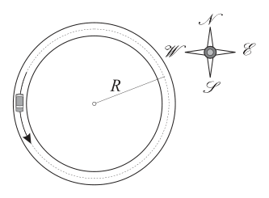
Car on circular track with compass directionsTopic: Newtonian Mechanics Metodi: Kinematic Equations, Free-Body Diagram Competenze: Physical Reasoning, Diagrammatic Reasoning Objects: — Fonte: Testo (PDF) — p.10 Risposta: B · Soluzioni (PDF)
A vehicle is moving at a constant speed on a circular track with a radius , as shown in Figure 1.
-
When the machine is in the position indicated its acceleration is
-
A. directed north
-
B. directed east
-
C. directed south
-
D. directed west
-
**E ** nothing
Car on circular track with compass directions
Topic: Newtonian Mechanics Metodi: Kinematic Equations, Free-Body Diagram Competenze: Physical Reasoning, Diagrammatic Reasoning Objects: — Fonte: Testo (PDF) — p.10 The Commission has also adopted a number of proposals for the implementation of the ‘European Union’s strategy for the protection of the environment.
Quando una radiazione elettromagnetica di frequenza colpisce il catodo di una cella fotoemissiva, si ha un’emissione di elettroni.
-
Se la frequenza di soglia della cella è , la massima energia cinetica degli elettroni emessi è direttamente proporzionale
-
A. al lavoro di estrazione dal catodo.
-
B. alla lunghezza d’onda della radiazione incidente.
-
C. alla frequenza della radiazione incidente.
-
D. alla frequenza di soglia .
-
E. alla differenza tra le frequenze. Topic: Modern-Quantum Physics Metodi: Photon Energy Relation Competenze: Physical Reasoning, Mathematical Modeling Objects: Photon, Electron Fonte: Testo (PDF) — p.10 Risposta: E · Soluzioni (PDF)
When electromagnetic radiation of frequency hits the cathode of a photoemissive cell, electrons are emitted.
-
If the cell threshold frequency is , the maximum kinetic energy of the electrons emitted is directly proportional
-
**A ** to the extraction work from the cathode.
-
**B ** at the wavelength of the incident radiation.
-
C. alla frequenza della radiazione incidente.
-
D. at the threshold frequency .
-
E. to the difference between frequencies. Topic: Modern-Quantum Physics Metodi: Photon Energy Relation Competenze: Physical Reasoning, Mathematical Modeling Objects: Photon, Electron Fonte: Testo (PDF) — p.10 Risposta: E · Soluzioni (PDF)
-
In quale dei seguenti casi si avrà la maggior variazione del modulo della quantità di moto di un carrello di massa kg che si sta muovendo di moto rettilineo?
-
A. Quando accelera da fermo fino a 3 m s.
-
B. Quando accelera da 2 m s fino a 4 m s.
-
C. Quando subisce per 2 s l’effetto di una forza di 3 N parallela al moto.
-
D. Quando subisce per 0.5 s l’effetto di una forza di 10 N parallela al moto.
-
E. Quando la sua velocità aumenta di 4 m s in 0.1 s. Topic: Newtonian Mechanics, Conservation of Momentum Metodi: Impulse-Momentum Theorem, Kinematic Equations Competenze: Mathematical Modeling, Physical Reasoning Objects: Cart Fonte: Testo (PDF) — p.10 Risposta: C · Soluzioni (PDF)
-
In which of the following cases will the motorcycle quantity of a cart moving in straight line kg be most variable?
-
A. When accelerating from a stationary to 3 m s.
-
B. When accelerating from 2 m s to 4 m s.
-
C. When it is subjected to a force of 3 N parallel to the engine for 2 s.
-
D. When it is subjected to a force of 10 N parallel to the engine for 0.5 s.
-
E. When its speed increases by 4 m s in 0.1 s. Topic: Newtonian Mechanics, Conservation of Momentum Metodi: Impulse-Momentum Theorem, Kinematic Equations Competenze: Mathematical Modeling, Physical Reasoning Objects: Cart Fonte: Testo (PDF) — p.10 The Commission has also adopted a proposal for a regulation on the protection of the environment in the Member States of the European Union.